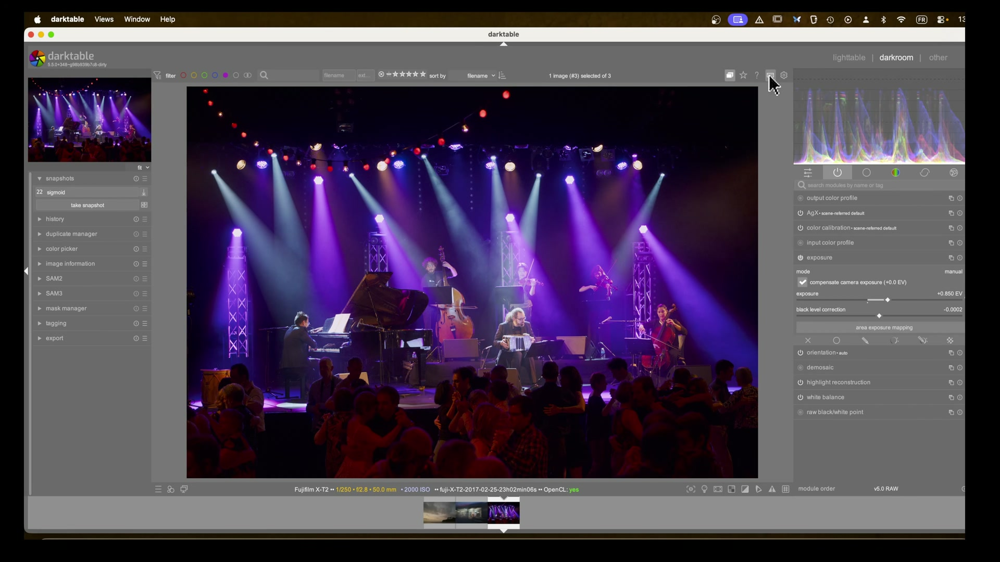
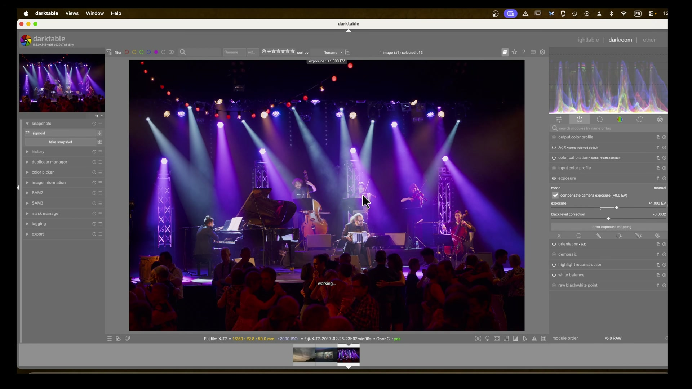
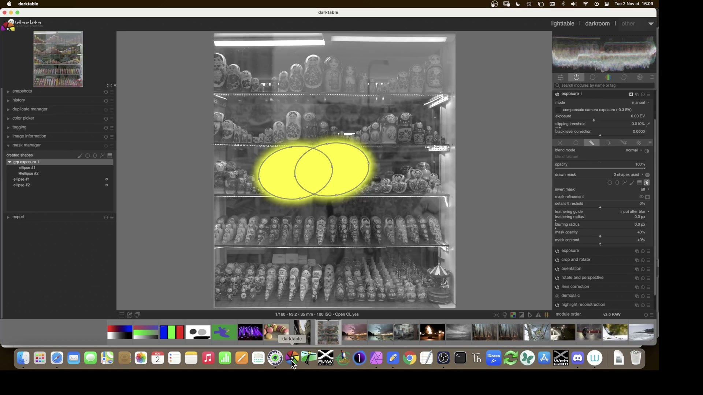
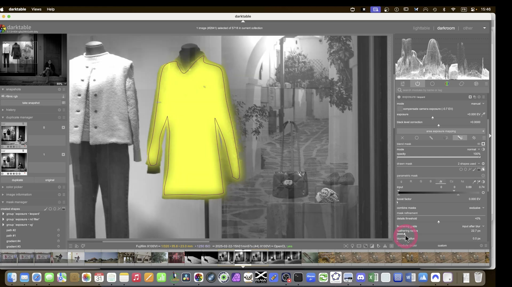
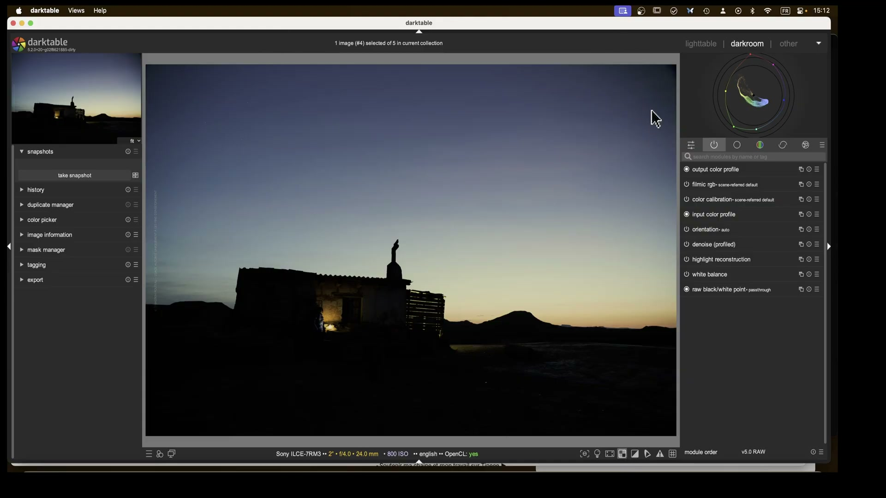

Scarsa illuminazione -- Concerto e foto notturne¶
Fonti: Lowlight photos in darktable -- A Dabble in Photography | darktable Night Sky Full Edit -- A Dabble in Photography
Figura 1 -- Immagine lowlight: luci sceniche viola, ISO 2000, esposizione da recuperare.
Due scenari di scarsa illuminazione: un concerto con luci sceniche colorate (ISO 2000) e un paesaggio notturno al crepuscolo.
Parte A -- Foto di un concerto¶
Contesto¶
Fujifilm X-T2, 50mm, f/2.8, 1/250s, ISO 2000. Scena con illuminazione scenica viola e bianca. La sfida principale: recuperare dettagli dai volti dei musicisti senza distruggere l'atmosfera della scena.
Passo 1 -- Configurazione rapida dell'esposizione¶
Configurare una scorciatoia da tastiera per l'esposizione: premere E per attivare il modulo e usare la rotella del mouse per regolare rapidamente.
Exposure: | Parametro | Valore | |-----------|--------| | Exposure | +1.000 EV (poi aumentare ulteriormente) | | Black level correction | -0.0002 |
Scorciatoia E + rotella
Assegnare il modulo Exposure alla scorciatoia E e usare la rotella del mouse per regolazioni rapide. Fondamentale quando si lavora su molte immagini in sessione.
Figura 2 -- Regolazione rapida dell'esposizione con scorciatoia E + rotella.
Passo 2 -- Pipeline con AGX¶
Per le foto a luci miste, AGX+ e' preferibile per evitare tonalita' magenta indesiderate:
| Parametro | Valore |
|---|---|
| Output color profile | AgX+ scene-referred default |
| Input color profile | scene-referred default |
Perche' AGX+ per il lowlight
AGX+ gestisce meglio i colori saturi (come le luci viola di un palco) senza generare blocchi di colore innaturali. Il profilo AgX+ e' specificamente ottimizzato per scene con colori dominanti forti.
Passo 3 -- AGX avanzato: controllo tonale¶
AGX (impostazioni principali): | Parametro | Valore | |-----------|--------| | White relative exposure | 6.50 EV | | Black relative exposure | -10.00 EV | | Dynamic range scaling | +10.00% | | Pivot relative exposure | +0.00 EV | | Pivot target output | 18.00% | | Contrast | 2.80 | | Shoulder power | 1.55 | | Toe power | 1.55 |
Preservare i volti
Non aumentare eccessivamente il contrasto per preservare i dettagli facciali. Usare shoulder power e toe power invece del cursore contrasto generico per un controllo piu' preciso su luci e ombre.

Figura 3 -- Configurazione AGX+ per luci sceniche viola: shoulder/toe al posto del contrasto generico.
AGX (parametri avanzati della curva): | Parametro | Valore | Note | |-----------|--------|------| | Shoulder start | 17.54% | Anticipa il contrasto nelle medie-luci | | Toe power | 2.37 | Approfondisce le ombre | | Curve gamma | 2.20 | Default |
Passo 4 -- Calibrazione colore: Primaries¶
Per recuperare vivacita' cromatica dopo AGX:
Color Calibration (tab Primaries): | Parametro | Valore | |-----------|--------| | Red attenuation | 10.00% | | Red rotation | +2.0 | | Green attenuation | 10.00% | | Green rotation | -1.0 | | Blue attenuation | 15.00% | | Blue rotation | -3.0 | | Master purity boost | 0.00% | | Red purity boost | 10.00% | | Green purity boost | 10.00% |
Evitare il look troppo neutro
L'attenuazione del rosso al 10% evita un rendering troppo neutro o tendente al bianco e nero. Ogni colore primario richiede una regolazione diversa in base alla scena.
Passo 5 -- Color Equalizer per contrasto e brillanza¶
Color Equalizer: | Parametro | Valore | Scopo | |-----------|--------|-------| | Shadows | -8.16% | Scurire ombre per contrasto | | Mid-tones | -5.74% | Recuperare dettagli volti | | Highlights | +12.39% | Controllare luci del palco |
Strategia ombre-luci
Ridurre ombre e toni medi aumenta il contrasto percepito e recupera dettagli sui volti. Aumentare le luci controlla la saturazione delle luci sceniche senza slavare i colori.

Figura 4 -- Color Equalizer: ombre/toni medi scuriti per contrasto, luci aumentate per controllare saturazione.
Passo 6 -- Color Balance RGB per raffinamento¶
Color Balance RGB: | Parametro | Valore | |-----------|--------| | Mode | Standard o Custom | | Perceptual brilliance | Variabile per zone |
Usare per controllare lo spill cromatico (colore che "sborda" da aree molto saturate) e recuperare dettagli nelle zone sovraesposte dalle luci sceniche.

Figura 5 -- Color Balance RGB: controllo spill cromatico e recupero dettagli luci sceniche.
Parte B -- Paesaggio notturno al crepuscolo¶
Contesto¶
Figura 6 -- Paesaggio notturno: edificio illuminato, cielo interessante ma immagine piatta.
Sony ILCE-7RM3, 24mm, f/4.0, ISO 800. Scena al crepuscolo con edificio illuminato internamente. Il cielo ha colori interessanti ma l'immagine e' piatta e il primo piano e' troppo scuro.
Passo 1 -- Valutazione del file RAW¶
Verificare la presenza di dati nelle alte luci prima di aumentare l'esposizione:
| Parametro | Valore |
|---|---|
| Output color profile | Filmic RGB, scene-referred default |
| Input color profile | scene-referred default |
| Denoise | Profiled |
| Highlight reconstruction | Disabled |
| White balance | As shot |
Controllare i dati RAW
Prima di aumentare l'esposizione, verificare che i canali RGB non siano clipped. Un canale gia' al limite non recuperera' dettagli aumentando l'esposizione.
Passo 2 -- Esposizione aggressiva e compressione tonale¶
Exposure: | Parametro | Valore | |-----------|--------| | Exposure | +2.802 EV | | Black level correction | 0.0002 |
Filmic RGB: | Parametro | Valore | Note | |-----------|--------|------| | White relative exposure | 4.88 EV | Ricco di colore negli highlight | | Black relative exposure | -13.34 EV | Illuminare le ombre |

Figura 8 -- Filmic RGB: compressione tonale per recuperare dettagli dal RAW notturno.
Look only per la curva
La modalita' look only nella curva Filmic RGB mostra l'effetto senza modifiche permanenti -- utile per sperimentare prima di applicare.
Passo 3 -- Strategia cielo / primo piano separati¶
Creare due istanze di Exposure con maschere inverse:
Figura 7 -- Maschera Exposure: cielo e primo piano separati con maschera disegnata + Jz parametrica.
Exposure (istanza "sky"): | Parametro | Valore | |-----------|--------| | Drawn mask | Tracciato a mano sul cielo | | Parametric mask | Jz (luminanza) | | Combine masks | Exclusive |
Exposure (istanza "ground"): | Parametro | Valore | |-----------|--------| | Maschera | Inversa dell'istanza sky | | Target | Primo piano |
Passo 4 -- Correzione ottica¶
Lens Correction: | Parametro | Valore | |-----------|--------| | Lens data read | Si (auto) | | Vignetting | Corretto |
Lens correction prima delle maschere
Poiche' la correzione dell'obiettivo viene applicata prima del modulo sky, la maschera si aggiorna automaticamente (remasked) per adattarsi alla nuova geometria dell'immagine.
Passo 5 -- Regolazione avanzata del cielo¶
Color Calibration (istanza "sky"): | Parametro | Valore | |-----------|--------| | Adaptation | CAT16 (CIECAM16) | | Illuminant | Custom | | Hue | 275.0 (magenta-ciano) | | Chroma | 19.1% | | Gamut compression | 1.00 | | Clip negative RGB | True |
Color Equalizer per affinare la tonalita' del cielo.

Figura 9 -- Tone Equalizer: scultura della luce tra cielo e primo piano.
Passo 6 -- Ritaglio cinematografico e filtro graduato¶
Applicare un ritaglio in proporzione cinematografica (es. 2.35:1) per enfatizzare la scena. Poi un filtro graduato (drawn mask gradient) per:
- Scurire ulteriormente il cielo nella parte superiore
- Schiarire il primo piano nella parte inferiore
Passo 7 -- Ritocco elementi di disturbo e nitidezza¶
Rimuovere elementi distraenti con lo strumento di clonazione/repair. Poi:
- Nitidezza finale leggera
- Eventuale effetto bagliore (glow) per le luci interne
Riepilogo impostazioni -- Concerto¶
| Modulo | Parametri chiave | Scopo |
|---|---|---|
| Exposure | +1.000 EV (poi aumentare) | Luminosita' base |
| AGX+ | White 6.5 EV, Black -10 EV, Contrast 2.80 | Tone mapping, no magenta |
| AGX (avanzati) | Shoulder start 17.54%, Toe 2.37 | Contrasto controllato |
| Color Calibration (Primaries) | Attenuazione R 10%, G 10%, B 15% | Vivacita' cromatica |
| Color Equalizer | Shadows -8%, Mids -6%, Highlights +12% | Contrasto e dettagli volti |
| Color Balance RGB | Brilliance per zone | Controllo spill |
Riepilogo impostazioni -- Notturno¶
| Modulo | Parametri chiave | Scopo |
|---|---|---|
| Exposure | +2.802 EV | Recuperare ombre |
| Filmic RGB | White 4.88 EV, Black -13.34 EV | Compressione tonale |
| Exposure (sky) | Maschera disegnata + Jz | Regolazione cielo |
| Exposure (ground) | Maschera inversa | Regolazione primo piano |
| Lens Correction | Auto | Rimuovere vignettatura |
| Color Calibration (sky) | Hue 275, Chroma 19.1% | Colore cielo |
| Contrast Equalizer | Mix variabile | Contrasto locale finale |
Principi chiave per il lowlight¶
- AGX+ per colori dominanti forti -- evita i blocchi di colore innaturali
- Shoulder/Toe al posto del contrasto -- controllo separato di luci e ombre
- Maschere inverse -- cielo e primo piano gestiti separatamente
- Snapshot ad ogni passo -- fondamentale per non perdere dettagli sui volti
- Primaries prima del tone mapping -- attenuare i colori saturi PRIMA della compressione tonale
Fonti¶
-
Lowlight photos in darktable -- A Dabble in Photography ↩
-
darktable Night Sky Full Edit -- A Dabble in Photography ↩